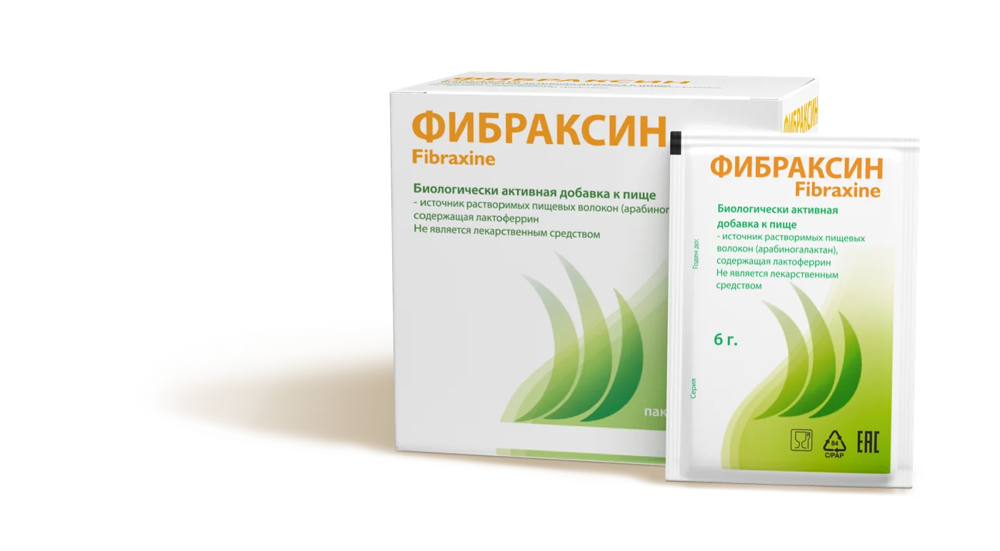

Лусинэ
«Классное средство, через месяц кишечник работает как по часам, ещё и похудела на 3 кг!»
Смотреть на apteka.ruЧто говорят покупатели, видеоотзывы и публикации в СМИ.
Отзывы с сайтов аптек — по ссылке в карточке открывается оригинал.
Лусинэ
«Классное средство, через месяц кишечник работает как по часам, ещё и похудела на 3 кг!»
Смотреть на apteka.ruСветлана
«Отличный пребиотик, который не только нормализует микрофлору, останавливает диарею и убирает запор, но и очищает лицо от прыщей у подростков, а также помог нам при анемии. Суперсредство для всей семьи, которое всегда в нашей аптечке.»
Смотреть на apteka.ruНаталия Тютина
«Выписал врач для восстановления микрофлоры кишечника. У меня дивертикулярная болезнь, нужно пить его каждые три месяца. Отличный препарат, хорошо разводится в воде, вкус нейтральный. Мне помогает. Рекомендую.»
Смотреть на zdravcity.ruСветлана Н.
«Всегда держу в аптечке, так как это палочка-выручалочка для всей семьи для нормализации стула (останавливает диарею или убирает запор), у ребёнка-подростка и взрослого очищает кожу лица от прыщей (делает прямо бархатистой). Сейчас заказываю систематически плюсом для мамы, у которой анемия, для дополнительного комплексного лечения по рекомендациям доктора.»
Смотреть на ozon.ruКороткие ролики от тех, кто принимает Фибраксин.
Публикации о Фибраксине и компании «Альфасигма Рус» в деловых и отраслевых изданиях.
Фибраксин — растворимые пищевые волокна и лактоферрин в одном саше.
Один раз в сутки.
